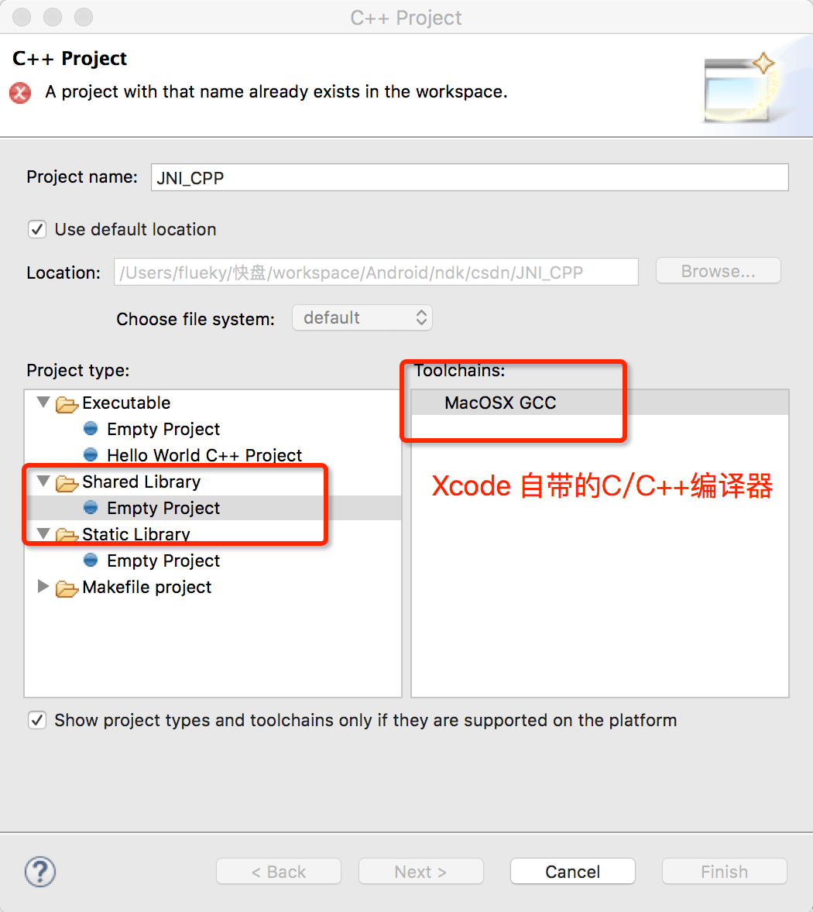
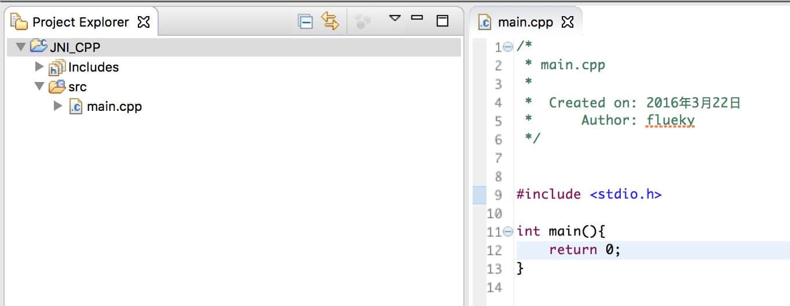
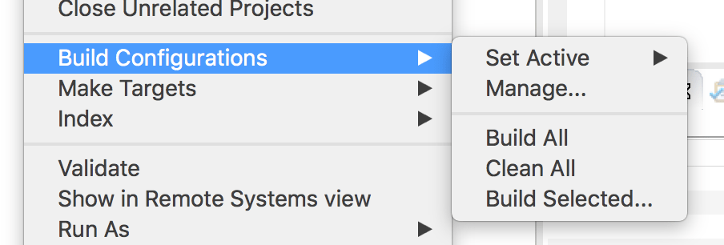
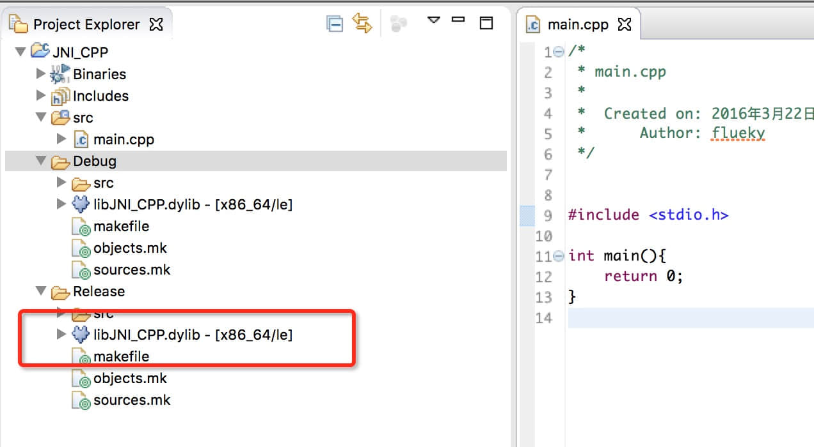
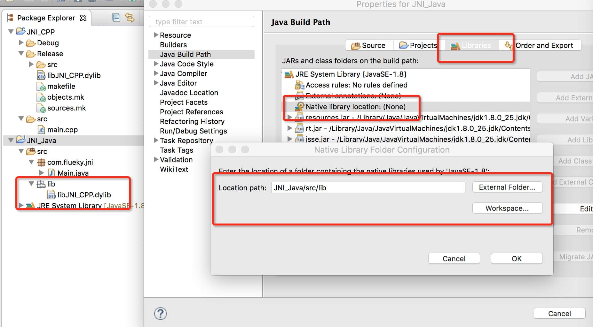
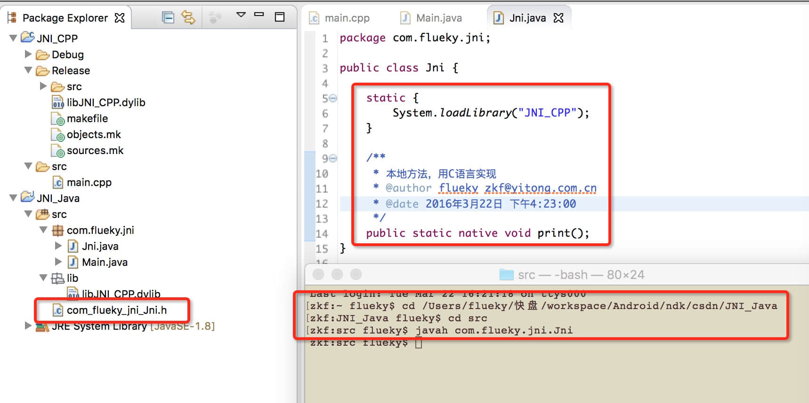
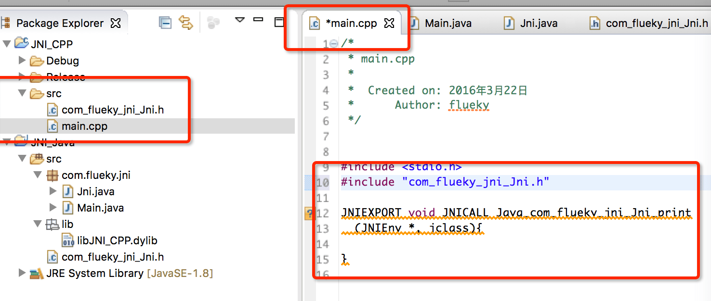
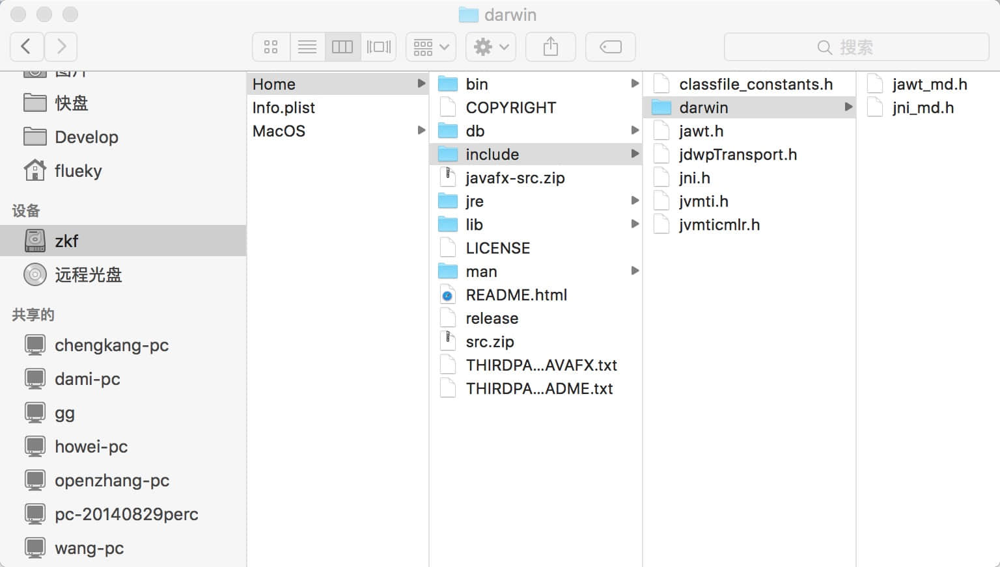
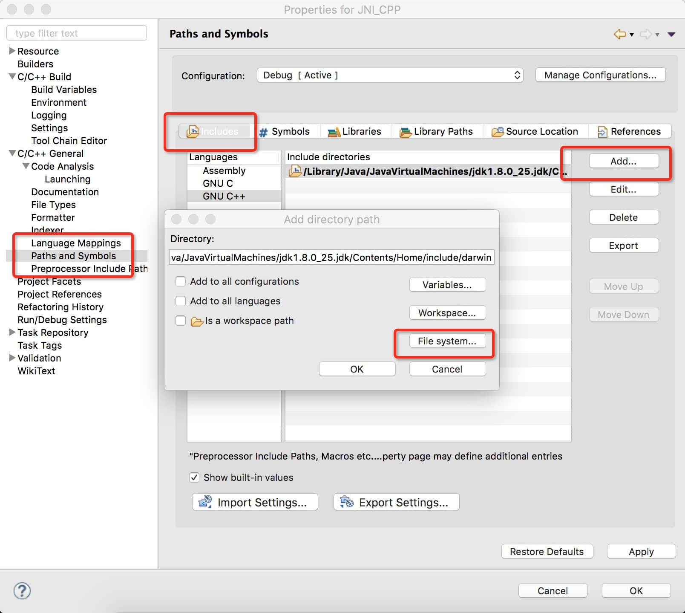

eclipse搭建JNI开发环境
第一次知道Java和C语言可以进行混合编程还是在学校时，当时翻阅一本叫做Java核心技术的书，简单的看了一眼。多次尝试在eclipse下搭建开发环境，均已失败而告终，因此对JNI的研究便作罢 。
直至工作中，做的是android软件开发的工作，公司的主要业务是给银行做手机银行软件，比较注重安全问题，因此将一些加密算法的实现封装在so文件中，由此再次激发本宝宝的好奇心，这个so文件到底是个什么鬼。
在此，对so文件不多做解释，做过Android开发都知道有个叫NDK的东西（Native Development Kit），本地开发工具。为什么会提到他呢，因为Google就是利用Java的JNI特性提供NDK帮助开发者们迅速实现so文件的开发。关于NDK的开发和使用，将会在下一个blog中讲解，现在我们来探讨一下JNI的开发。
工欲善其事必先利其器，一个好的电脑（准确说是好的系统），干起活来有着事半功倍的效果。以前用的是Windows系统，在eclipse下搭建不仅需要下载eclipse C/C++（CDT）版本（或者对其他版本的eclipse安装插件），还要安装Cygwin或其他版本的C语言编译器，配置环境变量什么的，本宝宝就没成功过。很惊喜的是，在搭建android开发环境时，已经自动安装了CDT插件，Mac系统集成XCode开发工具，也自带了C/C++的编译器。（等你以后学python时，Mac也集成了Python开发环境）。不得不说，Mac能够成为开发者最喜好的电脑，还是有一定原因的。至少我喜欢。废话多了，下面开始进入主题。
创建C++工程
创建C++工程：
新建src目录，随便创建一个cpp文件，如图。
右键工程，选择Build Configurations->Build All。若不报错，生成一个lib<工程名>.dylib文件，那么，恭喜你，你已经成功了一大半。


做好以上步骤，意味着，你已经可以编译动态连接库了，很像windows下的dll文件。接下来，新建一个Java工程，把生成的dylib文件，复制到Java工程中，并设置好依赖。
创建Java工程
首先新建Java工程就不多说了，若不会，还是建议回去从Java基础开始学起。Main.java 类测试使用。新建一个lib文件夹，放入之前生成的libJNI_CPP.dylib文件。选中Java工程，在Build Path中，选择Libraries，选中Native library location ，点击edit，弹出选择存放dylib的文件夹，点击OK保存。
至此，eclipse下的Jni开发环境已经搭建完毕。咱们简单的写一个小例子测试一下。
测试例子
新建一个Java类，在静态代码块中加载lib库。注意dylib库的命名格式，lib<工程名>.dylib，静态代码块装载lib库时只需要<工程名>。用native关键字声明print方法是本地方法。在命令行切换到工程目录，在src目录下，执行javah命令，注意是完整包名+类名（不需要类文件的后缀.java），不出现错误表示编译工程，在Java工程里，src目录下生成对应的头文件。若没有，在eclipse下尝试刷新一下Java工程目录。
将生成的com_flueky_jni_Jni.h头文件复制到，在main.cpp中导入头文件，将新生成的方法名复制到cpp文件中，很遗憾的发现，这里显示了错误的虚线。那是因为，Xcode 自带的编译器中，不包含jni的库。所以我们还需要手动导入jni的库，（若在eclipse中，配置好对应的环境变量，那么应该也是可以做到自动导入的。只是猜测，有兴趣的小伙伴可以研究下）。安装完整的JDK，会在其对应的目录下，找到我们需要的jni的头文件。
以mac系统为例，头文件所在的目录是
/Library/Java/JavaVirtualMachines/jdk1.8.0_25.jdk/Contents/Home/include。所以我们需要在JNI_CPP工程中导入两个文件夹。include和darwin。
按照图示，右键JNI_CPP工程，选择properties->Path and Symbols->Includes->GNU C++ ->Add ->File system 选择对应的两个include和darwin目录。依次添加进去。点击Apply，OK。再次回到main.cpp文件，发现错误提示已经消失，接下来就可以静静的写代码了。
main.cpp
1 | /* |
注意，生成头文件的方法中，形参没有对应的参数名，在此我们可以自定义参数名。编写该方法，只输出一个字符串。重新编译生成dylib文件，替换到Java工程中，然后执行Java代码，运行，查看结果。
附上源码：
Jni.java：
1 | package com.flueky.jni; |
Main.java
1 | package com.flueky.jni; |
com_flueky_jni_Jni.h
1 | /* DO NOT EDIT THIS FILE - it is machine generated */ |